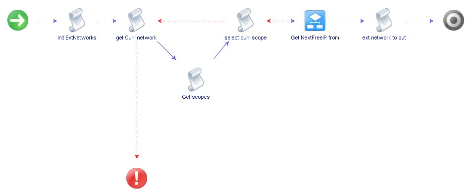
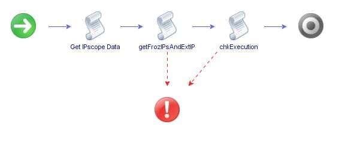
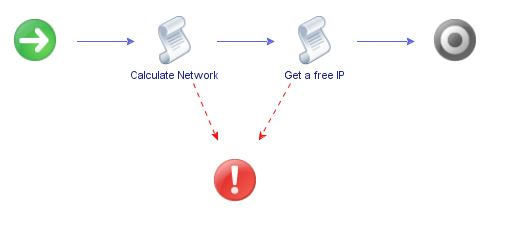

workflow "getNextFreeIp of externalNetworks"
J'expose rapidement ce flow ici en tant qu'exemple de la façon dont je peux répondre à des demandes bien spécifiques.
Ce
flow prend en entrée un Array d'objets "vCD External network" d'où les
données sont extraites grâce à l'utilisation de classes
disponibles dans le plugin vCD de vRO.
Chaque External network
est composé d'un ou plusieurs "IPscope". L' IPscope est un objet complexe comprenant une adresse IP de gateway
et un mask de sous-réseau (formant son CIDR).
Il comprend
également des pools d'IP disponibles, des ip individuelles
indisponibles ainsi que des ranges d'IP indisponibles.
La cohérence de toutes ces informations est vérifiée pour, le cas échéant, retourner
des messages d'erreur explicites . Il faut également gérer le
fait que les scopes ou les ranges puissent se chevaucher. Et, en
dernier lieux, il faut mémoriser pour les réserver le temps nécessaire a leur provisionnement,
les IP libres que le flow fournit. Ainsi, le flow délivre de
nouvelles IP tandis que les précédentes sont en cours de
provisionnement. Une fois qu'une IP est provisionnée, celle-ci se
retrouve inscrite en base dans l'objet "External network" dont elle dépend. Sa réservation par le biais de l'orchestration n'est alors plus nécessaire.
Tous cela est parfaitement réalisé dans l'implémentation qui suit.
Implémentation dans 3 flow imbriqués:
1) FLOW PARENT :
Fourni la première adresse IP disponible parmi plusieurs "external network" donnés en entrée.
L'attribut "reservationDelay", en minutes, permet de bloquer les ip précédemment
fournies de façon à ne pas les redistribuer à nouveau durant ce délais.
"getNextFreeIp of externalNetworks"

EXECUTION :
[I] Starting "getNextFreeIp of externalNetworks"
[I] Looking for free ip addr in network PUB-VDR-LAB-87-255-132-48#28
[D]
externalNetwork: PUB-VDR-LAB-87-255-132-48#28 /
urn:vcloud:network:c4cfdeac-921c-468f-864b-f6bf91b23f68 /
DistributedVirtualPortgroup:dvportgroup-811 on
(com.vmware.vcloud.entity.vimserver:d5b94de8-3cd4-4322-a4ad-59eb2df35750)
[D] 1 scopes
[D] cidr = 87.255.132.49/28
[D] scope 1/1
[D] subAllocations: 1 subAllocations
[D] edgeGateway lab3075ed:
[D] scope 1/1: 1 busyRanges
[D] scope 1/1: allocatedIpAddresses: 5
[D] ipScopeJson[0] =
{"scopeNumber":"1/1"
"cidr":"87.255.132.49/28"
"name":"PUB-VDR-LAB-87-255-132-48#28"
"pools":[{"ipBegin":"87.255.132.50"
"ipEnd":"87.255.132.56"}]
"busyRanges":[{"ipBegin":"87.255.132.51"
"ipEnd":"87.255.132.55"}]
"busyIPs":["87.255.132.53"
"87.255.132.54"
"87.255.132.50"
"87.255.132.55"
"87.255.132.52"]}
[D] Check tokens for frozzenIPs
[D] scanning token 4cd657f0-8a53-4035-8da1-5d10f9fe996b
[D] age = 1.7530333333333334 minutes
[I] frozzenIPs = 87.255.132.52
[D] Launching "get free ip from scope and frozzenIP"
[D] Executing "get free ip from scope and frozzenIP"
[D] maxLoop setting = 900 soit 30 mn.
[D] "get free ip from scope and frozzenIP" is running (loop 1/900)
[D] "get free ip from scope and frozzenIP" is completed (loop 2/900)
[D] Token 0b6188b0-c59e-4f83-9537-1fe7e07d6b2d of "get free ip from scope and frozzenIP": completed
[I] PUB-VDR-LAB-87-255-132-48#28 / scope 1/1: newFreeIP = 87.255.132.56 (nbAvailableIP = 1)
[I] externalNetworkOfIP = PUB-VDR-LAB-87-255-132-48#28
2) FLOW FILS :
"Get NextFreeIP from this IPscope"

EXECUTION : (On retrouve cette partie dans l'exécution précédente)
[D] Check tokens for frozzenIPs
[I] frozzenIPs =
[D] Launching "get free ip from scope and frozzenIP"
[D] Executing "get free ip from scope and frozzenIP"
[D] maxLoop setting = 900 soit 30 mn.
[D] "get free ip from scope and frozzenIP" is running (loop 1/900)
[D] "get free ip from scope and frozzenIP" is completed (loop 2/900)
[D] Token 4cd657f0-8a53-4035-8da1-5d10f9fe996b of "get free ip from scope and frozzenIP": completed
[I] PUB-VDR-LAB-87-255-132-48#28 / scope 1/1: newFreeIP = 87.255.132.52 (nbAvailableIP = 3)
Ce
flow lance en asynchrone le flow suivant, en ayant
récupéré dans ses tokens d'exécution, pour un CIDR donné, les IP
délivrées dans les 10 dernières minutes afin de les injecter en inputs
en tant que "Frozzen IP". C'est à dire IP réservées.
3) Et enfin, le flow PETIT-FILS qui réalise le calcul effectif des IP disponibles
"get free ip from scope and frozzenIP" Voir le code de la task "Get a free IP"

EXECUTION :
[[I] Calculate Network of COMPUTE-DVS-PG-MGMT: scopeNumber 1/1 (cidr=10.130.31.1/24)
[D] hostMin = 10.130.31.1 (176299777)
[D] hostMax = 10.130.31.254 (176300030)
[D] check ipPools In CIDR:
[D] chkRangeInScope(): [10.130.31.100 - 10.130.31.199] is included in [10.130.31.1 - 10.130.31.254]
[I] 1 ipPools: [
{ipBegin":"10.130.31.100","ipEnd":"10.130.31.199"}]
[D] Exclusion RANGES (Après reduction overlapp):[
{ipBegin":"10.130.31.100"},{"ipEnd":"10.130.31.199"}]
[D] reducedIpPools = 176299876, 176299975
[D] Add oposit range [10.130.31.1 - 10.130.31.99]
[D] Add oposit range [10.130.31.200 - 10.130.31.254]
[D] translated = [{"ipBegin":176299777,"ipEnd":176299875},{"ipBegin":176299976,"ipEnd":176300030}]
[D] forbiddenLongRangesPools = [{"ipBegin":176299777,"ipEnd":176299875},{"ipBegin":176299976,"ipEnd":176300030}]
[D] Pool nbAvailableIP: 100
[D] forbiddenRangesPool = [{"ipBegin":"10.130.31.1","ipEnd":"10.130.31.99"},{"ipBegin":"10.130.31.200","ipEnd":"10.130.31.254"}]
[I] listOfBusyRange is 13 long
[D] listOfBusyRange:[
{ipBegin":"10.130.31.158","ipEnd":"10.130.31.168"},
{ipBegin":"10.130.31.189","ipEnd":"10.130.31.189"},
{ipBegin":"10.130.31.157","ipEnd":"10.130.31.157"},
{ipBegin":"10.130.31.188","ipEnd":"10.130.31.188"},
{ipBegin":"10.130.31.171","ipEnd":"10.130.31.171"},
{ipBegin":"10.130.31.174","ipEnd":"10.130.31.184"},
{ipBegin":"10.130.31.173","ipEnd":"10.130.31.173"},
{ipBegin":"10.130.31.170","ipEnd":"10.130.31.170"},
{ipBegin":"10.130.31.191","ipEnd":"10.130.31.195"},
{ipBegin":"10.130.31.101","ipEnd":"10.130.31.156"},
{ipBegin":"10.130.31.169","ipEnd":"10.130.31.169"},
{ipBegin":"10.130.31.172","ipEnd":"10.130.31.172"},
{ipBegin":"10.130.31.186","ipEnd":"10.130.31.186"}]
[D] chkRangeInScope(): [10.130.31.158 - 10.130.31.168] is included in [10.130.31.1 - 10.130.31.254]
[D] chkRangeInScope(): [10.130.31.189 - 10.130.31.189] is included in [10.130.31.1 - 10.130.31.254]
[D] chkRangeInScope(): [10.130.31.157 - 10.130.31.157] is included in [10.130.31.1 - 10.130.31.254]
[D] chkRangeInScope(): [10.130.31.188 - 10.130.31.188] is included in [10.130.31.1 - 10.130.31.254]
[D] chkRangeInScope(): [10.130.31.171 - 10.130.31.171] is included in [10.130.31.1 - 10.130.31.254]
[D] chkRangeInScope(): [10.130.31.174 - 10.130.31.184] is included in [10.130.31.1 - 10.130.31.254]
[D] chkRangeInScope(): [10.130.31.173 - 10.130.31.173] is included in [10.130.31.1 - 10.130.31.254]
[D] chkRangeInScope(): [10.130.31.170 - 10.130.31.170] is included in [10.130.31.1 - 10.130.31.254]
[D] chkRangeInScope(): [10.130.31.191 - 10.130.31.195] is included in [10.130.31.1 - 10.130.31.254]
[D] chkRangeInScope(): [10.130.31.101 - 10.130.31.156] is included in [10.130.31.1 - 10.130.31.254]
[D] chkRangeInScope(): [10.130.31.169 - 10.130.31.169] is included in [10.130.31.1 - 10.130.31.254]
[D] chkRangeInScope(): [10.130.31.172 - 10.130.31.172] is included in [10.130.31.1 - 10.130.31.254]
[D] chkRangeInScope(): [10.130.31.186 - 10.130.31.186] is included in [10.130.31.1 - 10.130.31.254]
[I]
listOfBusyIPs = [10.130.31.100, 10.130.31.193, 10.130.31.169,
10.130.31.172, 10.130.31.156, 10.130.31.130, 10.130.31.189,
10.130.31.170, 10.130.31.154, 10.130.31.155, 10.130.31.177,
10.130.31.157, 10.130.31.187, 10.130.31.168, 10.130.31.158,
10.130.31.159, 10.130.31.171, 10.130.31.186, 10.130.31.188]
[D] chkRangeInScope(): [10.130.31.100 - 10.130.31.100] is included in [10.130.31.1 - 10.130.31.254]
[D] chkRangeInScope(): [10.130.31.193 - 10.130.31.193] is included in [10.130.31.1 - 10.130.31.254]
[D] chkRangeInScope(): [10.130.31.169 - 10.130.31.169] is included in [10.130.31.1 - 10.130.31.254]
[D] chkRangeInScope(): [10.130.31.172 - 10.130.31.172] is included in [10.130.31.1 - 10.130.31.254]
[D] chkRangeInScope(): [10.130.31.156 - 10.130.31.156] is included in [10.130.31.1 - 10.130.31.254]
[D] chkRangeInScope(): [10.130.31.130 - 10.130.31.130] is included in [10.130.31.1 - 10.130.31.254]
[D] chkRangeInScope(): [10.130.31.189 - 10.130.31.189] is included in [10.130.31.1 - 10.130.31.254]
[D] chkRangeInScope(): [10.130.31.170 - 10.130.31.170] is included in [10.130.31.1 - 10.130.31.254]
[D] chkRangeInScope(): [10.130.31.154 - 10.130.31.154] is included in [10.130.31.1 - 10.130.31.254]
[D] chkRangeInScope(): [10.130.31.155 - 10.130.31.155] is included in [10.130.31.1 - 10.130.31.254]
[D] chkRangeInScope(): [10.130.31.177 - 10.130.31.177] is included in [10.130.31.1 - 10.130.31.254]
[D] chkRangeInScope(): [10.130.31.157 - 10.130.31.157] is included in [10.130.31.1 - 10.130.31.254]
[D] chkRangeInScope(): [10.130.31.187 - 10.130.31.187] is included in [10.130.31.1 - 10.130.31.254]
[D] chkRangeInScope(): [10.130.31.168 - 10.130.31.168] is included in [10.130.31.1 - 10.130.31.254]
[D] chkRangeInScope(): [10.130.31.158 - 10.130.31.158] is included in [10.130.31.1 - 10.130.31.254]
[D] chkRangeInScope(): [10.130.31.159 - 10.130.31.159] is included in [10.130.31.1 - 10.130.31.254]
[D] chkRangeInScope(): [10.130.31.171 - 10.130.31.171] is included in [10.130.31.1 - 10.130.31.254]
[D] chkRangeInScope(): [10.130.31.186 - 10.130.31.186] is included in [10.130.31.1 - 10.130.31.254]
[D] chkRangeInScope(): [10.130.31.188 - 10.130.31.188] is included in [10.130.31.1 - 10.130.31.254]
[I] frozzenIPs = []
[I] All inputs checked OK
[D] allExclusionRanges = [
{ipBegin":"10.130.31.1","ipEnd":"10.130.31.99"},
{ipBegin":"10.130.31.200","ipEnd":"10.130.31.254"},
{ipBegin":"10.130.31.158","ipEnd":"10.130.31.168"},
{ipBegin":"10.130.31.189","ipEnd":"10.130.31.189"},
{ipBegin":"10.130.31.157","ipEnd":"10.130.31.157"},
{ipBegin":"10.130.31.188","ipEnd":"10.130.31.188"},
{ipBegin":"10.130.31.171","ipEnd":"10.130.31.171"},
{ipBegin":"10.130.31.174","ipEnd":"10.130.31.184"},
{ipBegin":"10.130.31.173","ipEnd":"10.130.31.173"},
{ipBegin":"10.130.31.170","ipEnd":"10.130.31.170"},
{ipBegin":"10.130.31.191","ipEnd":"10.130.31.195"},
{ipBegin":"10.130.31.101","ipEnd":"10.130.31.156"},
{ipBegin":"10.130.31.169","ipEnd":"10.130.31.169"},
{ipBegin":"10.130.31.172","ipEnd":"10.130.31.172"},
{ipBegin":"10.130.31.186","ipEnd":"10.130.31.186"},
{ipBegin":"10.130.31.100","ipEnd":"10.130.31.100"},
{ipBegin":"10.130.31.193","ipEnd":"10.130.31.193"},
{ipBegin":"10.130.31.169","ipEnd":"10.130.31.169"},
{ipBegin":"10.130.31.172","ipEnd":"10.130.31.172"},
{ipBegin":"10.130.31.156","ipEnd":"10.130.31.156"},
{ipBegin":"10.130.31.130","ipEnd":"10.130.31.130"},
{ipBegin":"10.130.31.189","ipEnd":"10.130.31.189"},
{ipBegin":"10.130.31.170","ipEnd":"10.130.31.170"},
{ipBegin":"10.130.31.154","ipEnd":"10.130.31.154"},
{ipBegin":"10.130.31.155","ipEnd":"10.130.31.155"},
{ipBegin":"10.130.31.177","ipEnd":"10.130.31.177"},
{ipBegin":"10.130.31.157","ipEnd":"10.130.31.157"},
{ipBegin":"10.130.31.187","ipEnd":"10.130.31.187"},
{ipBegin":"10.130.31.168","ipEnd":"10.130.31.168"},
{ipBegin":"10.130.31.158","ipEnd":"10.130.31.158"},
{ipBegin":"10.130.31.159","ipEnd":"10.130.31.159"},
{ipBegin":"10.130.31.171","ipEnd":"10.130.31.171"},
{ipBegin":"10.130.31.186","ipEnd":"10.130.31.186"},
{ipBegin":"10.130.31.188","ipEnd":"10.130.31.188"}]
[D] Exclusion RANGES (Après reduction overlapp):[
{ipBegin":"10.130.31.1"},{"ipEnd":"10.130.31.99"},
{ipBegin":"10.130.31.100"},{"ipEnd":"10.130.31.100"},
{ipBegin":"10.130.31.101"},{"ipEnd":"10.130.31.156"},
{ipBegin":"10.130.31.156"},{"ipEnd":"10.130.31.156"},
{ipBegin":"10.130.31.157"},{"ipEnd":"10.130.31.157"},
{ipBegin":"10.130.31.157"},{"ipEnd":"10.130.31.157"},
{ipBegin":"10.130.31.158"},{"ipEnd":"10.130.31.168"},
{ipBegin":"10.130.31.168"},{"ipEnd":"10.130.31.168"},
{ipBegin":"10.130.31.169"},{"ipEnd":"10.130.31.169"},
{ipBegin":"10.130.31.169"},{"ipEnd":"10.130.31.169"},
{ipBegin":"10.130.31.170"},{"ipEnd":"10.130.31.170"},
{ipBegin":"10.130.31.170"},{"ipEnd":"10.130.31.170"},
{ipBegin":"10.130.31.171"},{"ipEnd":"10.130.31.171"},
{ipBegin":"10.130.31.171"},{"ipEnd":"10.130.31.171"},
{ipBegin":"10.130.31.172"},{"ipEnd":"10.130.31.172"},
{ipBegin":"10.130.31.172"},{"ipEnd":"10.130.31.172"},
{ipBegin":"10.130.31.173"},{"ipEnd":"10.130.31.173"},
{ipBegin":"10.130.31.174"},{"ipEnd":"10.130.31.184"},
{ipBegin":"10.130.31.186"},{"ipEnd":"10.130.31.186"},
{ipBegin":"10.130.31.186"},{"ipEnd":"10.130.31.186"},
{ipBegin":"10.130.31.187"},{"ipEnd":"10.130.31.187"},
{ipBegin":"10.130.31.188"},{"ipEnd":"10.130.31.188"},
{ipBegin":"10.130.31.188"},{"ipEnd":"10.130.31.188"},
{ipBegin":"10.130.31.189"},{"ipEnd":"10.130.31.189"},
{ipBegin":"10.130.31.189"},{"ipEnd":"10.130.31.189"},
{ipBegin":"10.130.31.191"},{"ipEnd":"10.130.31.195"},
{ipBegin":"10.130.31.200"},{"ipEnd":"10.130.31.254"}]
[D]
reducedAllExclusionRanges = 176299777, 176299875, 176299876, 176299876,
176299877, 176299932, 176299932, 176299932, 176299933, 176299933,
176299933, 176299933, 176299934, 176299944, 176299944, 176299944,
176299945, 176299945, 176299945, 176299945, 176299946, 176299946,
176299946, 176299946, 176299947, 176299947, 176299947, 176299947,
176299948, 176299948, 176299948, 176299948, 176299949, 176299949,
176299950, 176299960, 176299962, 176299962, 176299962, 176299962,
176299963, 176299963, 176299964, 176299964, 176299964, 176299964,
176299965, 176299965, 176299965, 176299965, 176299967, 176299971,
176299976, 176300030
[D] Add oposit range [10.130.31.185 - 10.130.31.185]
[D] Add oposit range [10.130.31.190 - 10.130.31.190]
[D] Add oposit range [10.130.31.196 - 10.130.31.199]
[D]
translated =
[{"ipBegin":176299961,"ipEnd":176299961},{"ipBegin":176299966,"ipEnd":176299966},{"ipBegin":176299972,"ipEnd":176299975}]
[I] nbAvailableIP = 6
[I] For external net COMPUTE-DVS-PG-MGMT scope 1/1, NextFreeIP = 10.130.31.185 (176299961)